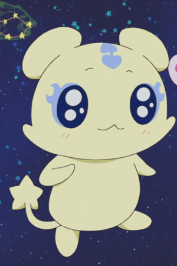

|
Haru Glory |
- Rave Master
- Fairy Tail x Rave Master
|
Haru Glory is a teenager boy who grew up on a small island called Garage Island. His destiny is find the powers of the Rave Master. He is not afraid to protect his friends. He is very motivated to protect them. He is very friendly and has a lot of enemy. |
|  |
Mepple |
- Pretty Cure
- Pretty Cure Max Heart
- Pretty Cure Max Heart Movie
- Pretty Cure Max Heart Moive 2: Friends of the Snow-Laden Sky
- Pretty Cure All Stars Movie DX: Minna Tomodachi Kiseki no Zenin Daishuugou
- Pretty Cure All Stars Movie DX2: Kibou no Hikari Rainbow Jewel o Mamore
- Pretty Cure All Stars Movie DX3: Reach the Future! The Rainbow Flower that Connects the World
- Pretty Cure All Stars New Stage 2: Friends of the Heart
- Pretty Cure All Stars Movie: Spring Carnival
|
Mepple is the chosen protector of the Princess of Hope. He loves Mipple and gets jealous of Pollun. Miplle and selfish and whins about being hungry. Mepple can be manipulative. |
 |
Sousuke Sagara |
- Full Metal Panic!
- Full Metal Panic? Fumoffu
- Full Metal Panic! The Second Raid: Episode 00
- Full Metal Panic! The Second Raid
- Full Metal Panic! The Second Raid
- Full Metal Panic! The Second Raid OVA
- Full Metal Panic! The Invisible Victory
|
Sousuke Sagara is a segeant within the paramilitary counter-terrorist force, Mithril. He is an Arm Slave pilot, and specialist in different types fo fighting. He not very good at interacting off the battlefield. He is ver hard working and will try his best. |
 |
Touya Kinmoto |
- Cardcaptor Sakura
- Cardcaptor Sakura Movie 1
- Cardcaptor Sakura Movie 2: The Sealed Card
- Cardcaptor Sakura: Clear Card Prologue
- Cardcapter Sakura: Clear Card
|
Touya Kinomoto is the brother of Sakura Kinomoto. He holds the belief that as Sakura's older brother, he is the only person entitled to make fun of her. Touya is protective and caring her. He has some magical ability. |
 |
Tracey Sketchit |
- Pokemon
- Pokemon Movie 2: The Power of One
- Pokemon: Pikachu's Rescue Adventure
- Pokemom Movie 3: Spell of the Unknown
- Pokemon Movie 4: Pokemon 4Ever
- Pokemon Advanced Generations
- Pokemon Chronicles
|
Tracey Sketchit is a Pokemon watcher and a very big fan of Professor Oak. Tracey is a gentle person, and has a hard time saying no to anyone. He has broad knowledge about Pokemon. |